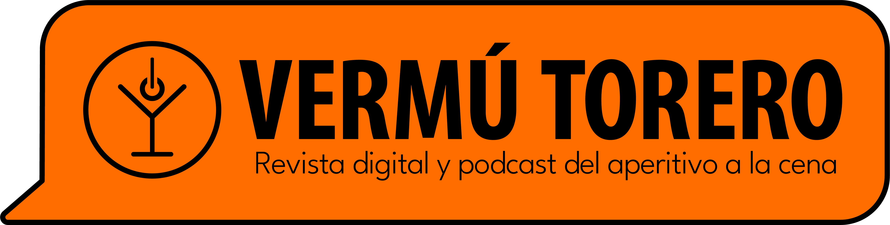

<nav class="navbar navbar-expand-lg navbar-dark">
    <div class="row text-center">
      <a class="navbar-brand row" href="">
        
      </a>
      <button class="navbar-toggler" type="button" data-bs-toggle="collapse" data-bs-target="#navbarSupportedContent"
        aria-controls="navbarSupportedContent" aria-expanded="false" aria-label="Toggle navigation">
        <span class="navbar-toggler-icon"></span>
      </button>
      <div class="collapse navbar-collapse mx-1 row" id="navbarSupportedContent">
        <ul class="nav navbar-nav me-auto mb-2 mb-lg-0 col-12 justify-content-center">
          <li class="nav-item dropdown">
            <a class="nav-link active dropdown-toggle" href="#" role="button" data-bs-toggle="dropdown" aria-expanded="false">
              Gastrosofía
            </a>
            <ul class="dropdown-menu">
              <li><a class="dropdown-item" href="publicaciones-categoria/Patata-Santa">Patata Santa</a></li>
              <li><a class="dropdown-item" href="publicaciones-categoria/Restaurantes">Restaurantes</a></li>
              <li><a class="dropdown-item" href="publicaciones-categoria/Bares">Bares</a></li>
              <li><a class="dropdown-item" href="publicaciones-categoria/Mercados">Mercados</a></li>
            </ul>
          </li>
     <!--      <li class="nav-item">
            <a class="nav-link active" aria-current="page" href="publicaciones-categoria/Gastrosofía">Gastrosofía</a>
          </li> -->
          <li class="nav-item">
            <a class="nav-link active" href="publicaciones-categoria/Entrevidas">Entrevidas</a>
          </li>
          <li class="nav-item">
            <a class="nav-link active" aria-current="page" href="publicaciones-categoria/Viajar-a-solas">Viajar a solas</a>
          </li>
          <li class="nav-item">
            <a class="nav-link active" aria-current="page" href="publicaciones-categoria/Beber-bien">Beber bien</a>
          </li>
          <li class="nav-item">
            <a class="nav-link active" aria-current="page" href="publicaciones-categoria/Culturoides">Culturoides</a>
          </li>
          <li class="nav-item">
            <a class="nav-link active" aria-current="page" href="publicaciones-categoria/Entrevidas">Entrevidas</a>
          </li>
         <!--  <li class="nav-item">
            <a class="nav-link active" aria-current="page" href="publicaciones-categoria/Culturoides">Autoamor</a>
          </li> -->
          <li class="nav-item dropdown">
            <a class="nav-link active dropdown-toggle" href="#" role="button" data-bs-toggle="dropdown" aria-expanded="false">
             Autoamor
            </a>
            <ul class="dropdown-menu">
              <li><a class="dropdown-item" href="publicaciones-categoria/Relaciones">Relaciones</a></li>
              <li><a class="dropdown-item" href="publicaciones-categoria/Autocuidado">Autocuidado</a></li>
            </ul>
          </li>

        <!--   <li class="nav-item">
            <a class="nav-link active" aria-current="page" href="sobre-nosotros">Sobre nosotros</a>
          </li> -->
      
          <li class="nav-item dropdown">
            <a class="nav-link active dropdown-toggle" href="#" role="button" data-bs-toggle="dropdown" aria-expanded="false">
              Administración
            </a>
            <ul class="dropdown-menu">
              <li><a class="dropdown-item" href="formulario">Añadir publicación</a></li>
              <li><a class="dropdown-item" href="tags">Tags y lugares</a></li>
              <!-- <li><a class="dropdown-item" href="tags">Usuarios</a></li> -->
              <li><a class="dropdown-item" href="/descubriendo-vermutorero">Landing-page</a></li>
              <!-- <li><a class="dropdown-item" href="tags">RRSS</a></li> -->
              <li><a class="dropdown-item" href="editor-inicio">Inicio</a></li>
              <li><a class="dropdown-item" href="sobre-nosotros/editor">Sobre nosotros</a></li>
              <li><a class="dropdown-item" href="ecommerce/gestion">Gestión de tienda</a></li>
            </ul>
          </li>
          <li>
            <button class="btn btn-outline-success btn-sm boton-login ml-4 mx-2 " type="submit">Log in</button>
            <button class="btn  btn-outline-light btn-sm boton-login" type="submit">Suscríbete</button>
          </li>
        </ul>
      </div>
    </div>
  </nav>